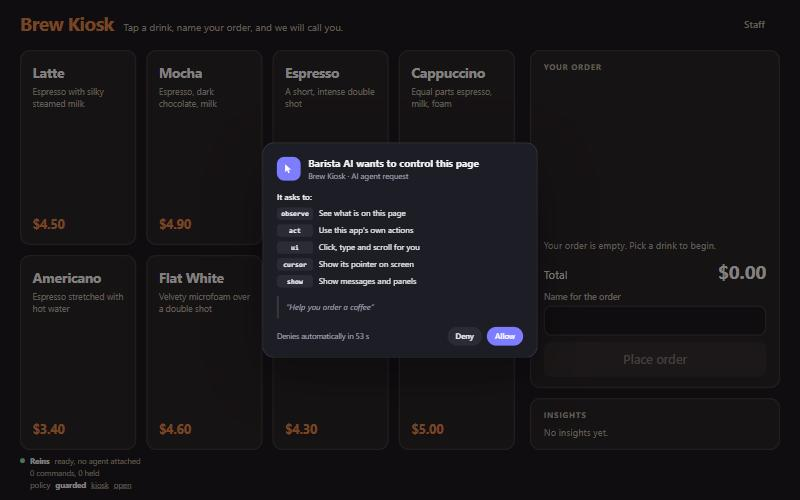
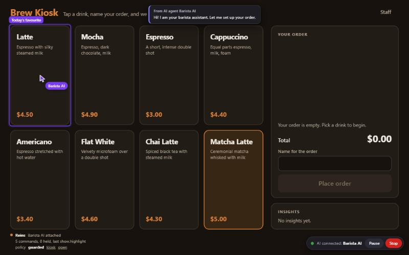
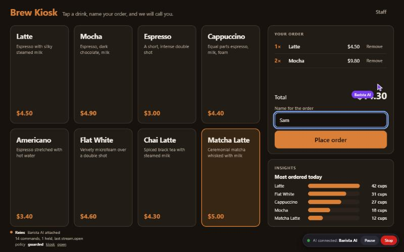
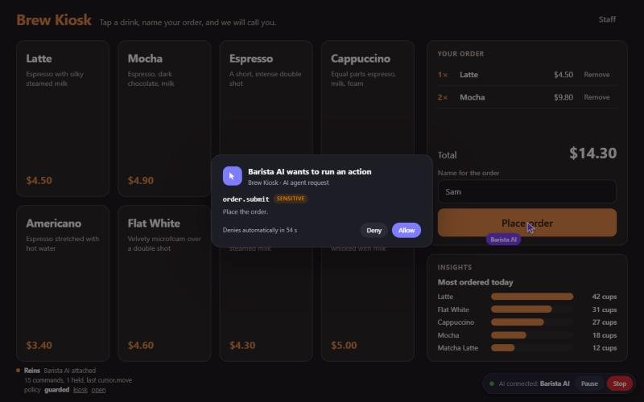

Let an AI agent drive your web app. You hold the reins.
Reins is a protocol, and a reference implementation, for letting an AI agent drive a web app that is running in a browser tab. The agent reads the screen as a compact tree, calls the app's own actions, moves a visible cursor and puts data in front of the person. The app decides what an agent may do, the person watches and can stop it, and a kiosk can lock it down to a fixed allowlist.
Protocol 0.1, package 0.1.0, Apache-2.0. A first version: the wire format may change before 1.0.
A safe action runs.A sensitive one waits for you.
See it run
One real session, thirty seconds
One real session of the Brew Kiosk demo in the repository, recorded in Chromium. The agent works through the hub, and Allow, Pause, Resume and Stop are real clicks. The film and the stills were recorded before the panel existed: today the indicator's text opens it, and the card for an action has a third button, “Always allow”. The playground runs the current driver.
What happens in the film, which has no sound: the page asks before the agent Barista AI may attach, and the person allows it. The agent adds a latte and two mochas and types a name. The person presses Pause, and the agent's next two commands come back refused. Placing the order waits for the person, who allows it, and the order is placed. The person presses Stop, and the agent's access is gone. How the film was made.

The page asks before an agent may attach.

The agent's cursor, a captioned toast, a highlight.

Order filled in, chart sent from a file, the live pointer stream circling the total.

A sensitive action waits for the person.
The indicator stays reachable when the app opens a modal dialog.
How it works
One protocol, two shapes
An agent talks to a hub, and the hub talks to the driver in the browser tab, both over reins.v1. A safe action passes the policy and runs. A sensitive action waits until the person approves it on screen.

agent
⇄
hub on loopback
⇄
driver in the tab
With a hub
The agent is outside the browser and reaches the tab through a broker on loopback. The hub authenticates both sides, issues grants, enforces its own policy and rate limits, and keeps the audit log. This is the shape for an agent harness: the agent SDK, the shell tools, or the MCP adapter.
The assistant runs in the page itself: no process and no network, the same protocol over in-memory links. The same grants, policy and consent prompts apply. The playground on this site is exactly this shape.
One message moves the cursor smoothly at display rate. A binary pointer stream with credit-based flow control carries live trajectories.
≈1,000characters to learn an app
Cheap in tokens
A model learns an app from a prompt card of about a thousand characters, reads the screen as a tree of similar size, and afterwards gets deltas of a few hundred. Bulk data goes to the screen without passing through the model.
3answers: allow, confirm, deny
Guarded
Actions carry a risk tier. Sensitive actions need the person's approval on screen, private fields are never read, and nothing in the protocol evaluates agent-supplied code. Authenticated sessions are sealed frame by frame.
0synthetic input, no navigation
Kiosk ready
A profile for unattended stations: allowlisted actions, annotated elements only, no synthetic input, no navigation, hash-chained audit log.
In the person's hands
The indicator is a button, and only you can press it
While an agent is attached, a pill in the corner of the page says so, with Pause and Stop. Its text opens a panel. No agent and no message can open it, close it or press anything in it. Script that runs in the page itself is outside that promise: keep it out with a strict Content Security Policy.
How much it asks is yours to set
For each attached agent you choose a level, from asking every time to never. A grant starts at ask, unless you set that agent to Strict before.
level
what an act request does
strict
asks every time, also for an action the policy allows
ask
asks when the policy says confirm or the hub sent c:1
auto
runs without asking, unless the action's risk is dangerous
bypass
runs without asking
You can also say Allow, Ask or Block for a single action, switch single scopes of the grant off, and see what the agent did. Whatever lets an agent do more takes a second step that names what stops asking, and the pill then shows the level. A deny of the app or the hub stays a deny at every level. What loosens ends with the grant; what you tightened stays with that agent for as long as the page is open.
The same panel has a Chat tab. You type to the agent that is driving the page, and it answers there while it works. What you type is a request, never an approval: an action that needs your approval still asks on its own prompt, and while that prompt waits the chat is hidden. Agents hear each other only once you say so.
The chat is drawn in the app's page, so the app can read it, as it can any of its own fields.
An Electron window is a page too. An app you write gets its link from its own main process, with no socket on the page side. An app you did not write can be adopted through its debugging connection, which gives an attached agent the whole window: read what that means first.
Two walk-throughs put two agents to work, Claude Code driving Hermes Desktop and both on one page, with every step marked as run or not run. Nothing was run with a model.
Reins ships as one package, @offensiveadhd/reins. It needs Node 22 or newer to build and to run the hub; the browser parts need no Node at all.
Install the package
From Git, in a project that has a bundler: the package builds itself on install. It is not on the npm registry. A static page with no build step copies one file, dist/bundle/reins.js (446 KiB, unminified), and imports it.
Declare the app's actions with a risk tier, the views it can show and the state an agent may read. The driver does the rest: the UI tree, the cursor, the consent prompt and the indicator.
Start a hub in the project that installed the package, then connect from Node. The hub writes its token to a file and prints the path; the SDK finds it.
The adapter is a stdio MCP server with eight tools. With Claude Code, once a hub has run on the machine, register the launcher, then start a new agent session.
Shell
claude mcp add --scope user reins node "$HOME/.reins/reins.mjs" mcp
The wire types are one file and the behaviour behind them is one document, in which the words MUST, SHOULD and MAY are normative. The same frames run over a loopback WebSocket and over an in-page message port.
Each conformance test names the requirement and the section it checks, and a meta-test fails when a normative sentence in the spec has no test. 14 files of language-neutral test vectors, computed independently of this implementation, are there for anyone writing another one.
Reviewers that did not write the code attacked it while it ran. The security model records what each review found, what was changed and what is left as a stated limit, and says that the fixes after the latest reviews have not been reviewed again. It also lists what Reins does not protect against. Read that list before deploying.